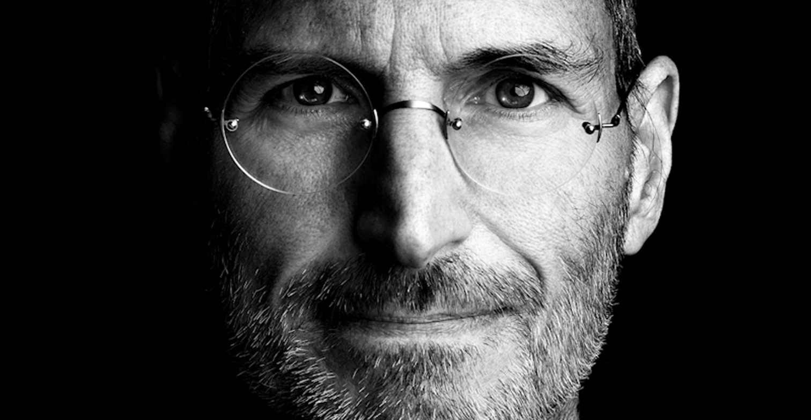

Steve Jobs
The man in the machines

Computer designer and corporate executive Steve Jobs is cofounder of Apple Computers
Life of Steve Jobs:
- Early life - Steven Jobs was born February 24, 1955, in San Francisco, California, and was adopted by Paul and Clara Jobs. He grew up with one sister, Patty. Paul Jobs was a machinist and fixed cars as a hobby. Jobs remembers his father as being very skilled at working with his hands.
- College - After graduating from high school in 1972, Jobs attended Reed College in Portland, Oregon, for two years. He dropped out after one semester to visit India and study eastern religions in the summer of 1974.
- Apple - Jobs had realized there was a huge gap in the computer market. At that time almost all computers were mainframes. They were so large that one could fill a room, and so costly that individuals could not afford to buy them.
- Macintosh -In 1984 Apple introduced a revolutionary new model, the Macintosh. The on-screen display had small pictures called icons. To use the computer, the user pointed at an icon and clicked a button using a new device called a mouse.
- NeXT - In December of 1996 Apple purchased NeXT Software for over $400 million. Jobs returned to Apple as a part-time consultant to the chief executive officer (CEO). The following year, in a surprising event, Apple entered into a partnership with its competitor Microsoft.